| Picture | Name | Description | What it does | Where it's from |
 |
Twig | A strangly carved wooden twig | Charges of fireball | - (ties on pickup) |
 |
Twig | - | Charges of Icestorm | - |
 |
Apple Sapling | A small apple tree sapling | Part of Coins Quest | Fallen Mages |
| Large Pine Tree | A large pine tree | Quest Item | Bandits in Decayed Lands | |
 |
Oak Sapling | A small oak tree sapling | Quest Item | Fallen Lords |
|
Perfect Oak Sapling | A perfect oak sappling. | Enchanted Terror Blood Quest | Arcanists |
 |
Brigand Heart | An ounec of a heart ripped from the chest of a brigand. | Trade for dryad bread or faction | Brigands/Bandits |
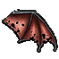 |
Bat Wing | An Ounce of the wing of a decaying bat | Breath Capture Vial Quest | Swamp Bats |
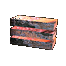 |
Akronium Brick | A block of refined akronium ore. | Many Quests | Trade 100lbs of Ore with Jebroon |
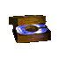 |
Coin Mold | An arkonium coin mold made with a strange wood. | Quest Item | Quest Item |
| Akronium Coins | One hundred akronium coins. | Quest Item | Quest Item | |
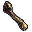 |
Titan Bone | A large titan bone | Quest Item | Amorals |
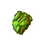 |
Dragon Heart | Piece of the crystallized heart of a large green dragon | Gaunts Quest | Green Dragon |
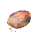 |
Dryad Bread | An ounce of fresh baked dryad bread. | Dornar Quest | Trade Brigand Heart with Dryads |
 |
Fluidic Diamond | A perfect fluidic diamond | Quest Item | Rift Titan or Albron or Random drop in Mormar 10 to 25, counts as a gem, you'll need to examine each 'lair diamond' |
 |
Mormar Book | A torn up binder of hand written akronium notes | Mormar Pages to be put into this book | From the Foreman |
|
Shimok Book | A sealed tome. | Wolf Pages to be put into this book | From Wolves |
 |
Bandit Lord Inner Door Key | A greater ice mines key | Opens Inner door to Bandit Lord | Quest, Very rare drop of ice monsters |
 |
Bandit Lord Outer Door Key | An ice mines key | Opens Outer door to Bandit Lord | Quest, Rare drop of ice monsters |
 |
Miners Key | Key to the ancient akronuim hillside mines | Opens Mines | Quest Item |
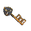 |
Second Miners Key | A key to the inner akronium mines | Opens the area leading to Minlok | Trade a brigand heart to a miner Requires 13000+ miner faction |
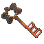 |
Minlok Key | A key to the deep akronium mines | Opens the door to Minlok | Rare drop from rougeminers in the second area of the akro mines |
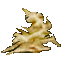 |
Dryad Parts | Dryad parts. | Quest Item | Dryads |
 |
Forgotten Dust | Ounce of dust of a forgotten one. | HP/EP Quest | Forgottens |
 |
Bandit Lord Head | A head of a Bandit Lord. | Trade for Bandit Lord Ring | Bandit Lord |
 |
Rift portal fragment | A rift portal fragment | In temporal flux | Kill and search RiftGuardian |
 |
Mormar Page ---------- Shimok Page |
- ------------ A page of what appears to be researcher notes. this item is part ## of the complete work. |
Pages to be put into Mormar book -------------- Pages to be put into Shimok book |
From Mormar ------------- From Wolves |
 |
Packet of Mandrake Roots | A packet of mandrake root scrappings | Quest Item | Bog Witches |
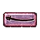 |
Sabre Mold | An akronium sabre mold | Quest Item | Quest Item |
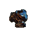 |
Small Chunk of Ore 1lb | A small nugget of akronium ore. | Block of Akronium | Bandits/Miners |
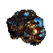 |
Large Chunk of Ore 10lb | A large nugget of akronium ore. | Block of Akronium | Minlok / Jelterban/ Lich / Green Dragon |
 |
Terror Blood | A vial of terror blood. | Quest Item | Terrors |
|
Enchanted Terror Blood | You are looking at a vial of viscous glowing red liquid. | Quest Item | Quest |
 |
Breath Capture Vial | A vial of a viscous glowing red liquid. | Quest Item | Quest |
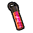 |
Captured Breath Vial | A vial of smokey, viscous glowing red liquid. | Killer Quest Item | Quest |
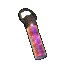 |
Wisdom Ingot | Ingot of wisdom. | Primal Quest | Quest |
 |
Justice Ingot | Ingot of justice | Primal Quest | Bandit |
 |
Primal Ingot | Ingot of the primal. | Primal Quest | Bandit Lord |
 |
Prudence Ingot | Ingot of the prudent. | Primal Quest | Merkon |
 |
Strength Ingot | Ingot of strength | Primal Quest | Ajamtax |
 |
Impure volcanic ore | A small glowing orb of impure volcanic ore | to summon Duke marvin | Banditlord |
|
Volcanic Ore | A small glowing orb of volcanic akronium. | Defense Staff Quest | Minlok |
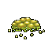 |
Yeti Bile | An ounce of a small pile of yeti Bile | Trades to miners for 1lb of ore (Requires 10001+ miner faction) |
Ice Flows |
 |
Yeti Bile | An ounce of a large chunk of yeti Bile | Trades to miners for 10lb of ore (Requires 10001+ miner faction) |
Ice Flows |
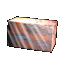 |
Fluidic Akronium Brick | - | - | - |
| Titan Annealed Akronium Brick | - | - | - | |
| Thanks to Ken for addional info on the akro mine key series | ||||